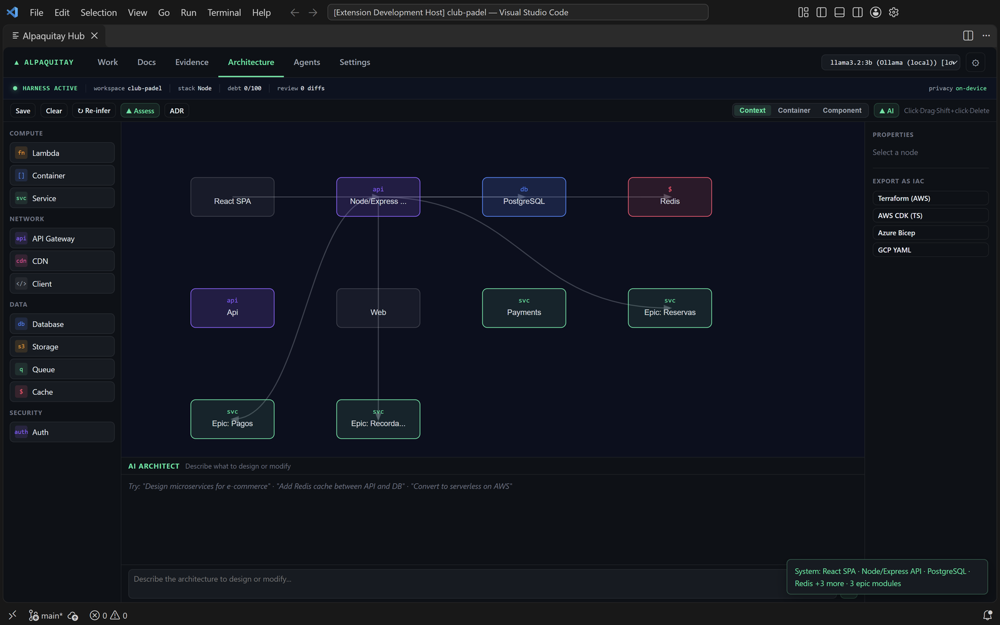

Capítulo 08
Architecture: diagramas, ADR e IaC
La pestaña Architecture es un lienzo de arquitectura que empieza relleno: Alpaquitay deduce el sistema a partir de lo que ya hay en tu proyecto y de lo que la especificación dice que se va a construir. Después puedes editarlo, pedir cambios en lenguaje natural, documentar decisiones y exportar infraestructura como código.
De dónde sale el diagrama

La inferencia es determinista y local (no usa modelo). Lee:
- Dependencias de
package.json(raíz y subpaquetes) y otros manifiestos:pom.xml,requirements.txt,go.mod,*.csproj… - Servicios de
docker-compose: nombres e imágenes (por ejemplopostgres,redis,rabbitmq). - Nombres de carpetas del primer y segundo nivel (
api/,web/,worker/…). spec.md: lo que el proyecto va a construir, y sus épicas como módulos.
Con eso coloca como mucho 14 nodos de sistema y 8 módulos de épica. Cada nodo recuerda su origen: el workspace actual, la especificación o una épica.
Trabajar en el lienzo


- Añadir nodos desde la paleta: Compute (Lambda, Container, Service), Network (API Gateway, CDN, Client), Data (Database, Storage, Queue, Cache) y Security (Auth).
- Conectar: Shift+clic en el nodo de origen y después Shift+clic en el de destino. Seleccionar: clic (sus propiedades aparecen a la derecha). Mover: arrastra. Borrar: selecciona y pulsa Delete.
- Nivel C4: los botones Context, Container y Component marcan el nivel en el que estás trabajando. En esta versión no filtran el diagrama: todos los nodos se ven en los tres niveles. Para un diagrama C4 por niveles, pídeselo al especialista de arquitectura en el chat («genera un diagrama C4 de contenedores de este proyecto»).
- Save guarda el diagrama en
.alpaquitay/arch.json; Clear lo vacía; ↻ Re-infer lo regenera desde el proyecto aunque haya uno guardado.
Pedir cambios en lenguaje natural
Pulsa ▲ AI para abrir el AI Architect y escribe, por ejemplo:
- «Diseña microservicios para un comercio electrónico»
- «Añade una caché Redis entre la API y la base de datos»
- «Conviértelo a serverless en AWS»
El arquitecto (el especialista de arquitectura de software) modifica el diagrama actual en lugar de empezar de cero.
Evaluar y documentar decisiones
- ▲ Assess pide una evaluación de la arquitectura actual: atributos de calidad, riesgos y recomendaciones.
- ADR abre un formulario con dos campos: el contexto (la situación actual)
y la decisión que estás considerando. Create ADR genera el registro y lo guarda en
.alpaquitay/adrs/.
Assess, ADR y AI Architect usan el proveedor activo.
Exportar a infraestructura como código
En el panel derecho, Export as IaC genera un punto de partida a partir del diagrama:
| Botón | Archivo |
|---|---|
| Terraform (AWS) | infra/main.tf |
| AWS CDK (TS) | infra/main.ts |
| Azure Bicep | infra/main.bicep |
| GCP YAML | infra/main.yaml |
Arquitecturas que reconoce
Alpaquitay detecta el estilo del proyecto y adapta las instrucciones y la estructura de carpetas que propone:
| Estilo | Se detecta por | Estructura |
|---|---|---|
| React SPA | package.json con react |
src/components, pages |
| Next.js | package.json con next |
app/ (App Router) |
| Vue | package.json con vue |
src/components, views |
| Angular | angular.json |
src/app/ |
| Express API | package.json con express |
routes, controllers, services |
| Java (Maven o Gradle) | pom.xml o build.gradle |
Clean Architecture: domain, application,
infrastructure, shared |
| C# Web API | *.csproj |
Controllers, Services, Models |
| Go | go.mod |
cmd, internal, pkg |
| Django / Flask | requirements.txt |
apps/ / blueprints/ |
| Paquete Python | pyproject.toml |
paquete con __init__.py |
| React Native | package.json con expo |
src/screens, components |
Todos los proyectos Java siguen Clean Architecture con inversión de dependencias estricta:
infrastructure → application → domain.